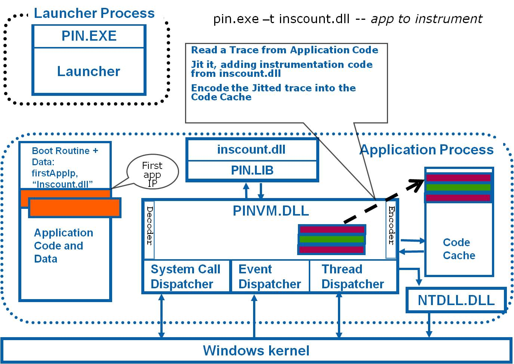

CNV - Computação em Nuvem e Virtualização
MEIC-A |
Laboratory 1: Introduction to Pin - Intel Instrumentation Tool
Overview
Pin is a tool from Intel for the instrumentation of programs, supporting multiple operating systems (e.g., Windows, Linux, MacOS) on multiple architectures (e.g., IA-32 a.k.a. x86, IA-32 EM64T a.k.a. x86-64, IA-64 a.k.a. Itanium).
Instrumentation is performed directly on binary code, once it is loaded on memory, therefore no access to source code is required. All executed code is generated by pin by dynamically translating original program code. Original application code is never executed, alternating between pin code and translated code.
Pin operates by applying a tool on a running application. A tool is a user-developed dynamic library containing functions that perform program instrumentation and analysis.
Instrumentation is performed once by registered callback functions that are invoked as code elements of the application program are translated (e.g., individual instructions, basic clocks, routines, libraries). These callbacks can perform modifications to code elements by inserting/appending additional code (e.g., inject calls to analysis functions).
Analysis is performed every time a piece of instrumented code is executed and analysis functions are invoked. Successive invocations of analysis code allows aggregation of results during program execution.
Pin is invoked with the following syntax:
pin [Pin Args] [-t [Tool Args]] -- [App args]

Support Material and Documentation
Pin Tutorials, Papers and Documentation available:
- Pin Tutorial presented at CGO 2013 conference: (pdf)
- Original Pin Tutorial from Intel, 2006: (pdf)
- Pin User Manual (v3.2): (html)
- Pin FAQ: (html)
- Pin original paper at PLDI 2005 conference: (pdf)
- Pin recepient of Most Influential PLDI Paper Award for 2015: (html)
This paper introduced Pin, a dynamic binary instrumentation framework that enables the creation of dynamic program analysis tools. Pin uses dynamic compilation to instrument executables and dynamically-linked libraries while they are running, permitting the tool writer to study the behavior of an application at the instruction level without significant perturbation to application behavior. The PLDI 2005 paper is highly cited and the system it describes is in widespread use in academia and industry. Pin's ease of use and relative efficiency have made it the tool of choice for dynamic binary instrumentation.
- Papers about Pin or using Pin at conferences: (html)
RNL Installation Setup
Linux/GCC
- 1. pin executable should be already in the command path
- E.g. of first invocation to check pin:>
> pin -version
- 2. To setup the local environment for the lab, execute the following: (you can copy & paste)
> mkdir /tmp/cnv/
> mkdir /tmp/cnv/pin
> cd /tmp/cnv/pin
> cp -R /opt/pin/* . (do not forget the final dot)
- 3. Build the first pin tools from source code:
> cd /tmp/cnv/pin/source/tools/ManualExamples/
> make
- 4. For convenience, keep one shell open in each of the following folders, to execute instrumentation tools and check their source code:
> /tmp/cnv/pin/source/tools/ManualExamples/
> /tmp/cnv/pin/source/tools/ManualExamples/obj-intel64
(and later)
> /tmp/cnv/pin/source/tools/SimpleExamples/
> /tmp/cnv/pin/source/tools/SimpleExamples/obj-intel64
Main Directories of Pin Installation
- ia32/ and intel64/: pin binaries - executable files (bin) and libraries (lib).
- source/include/: files to #include in pin tool code.
- source/tools/SimpleExamples/: examples of tools.
- source/tools/ManualExamples/: examples of tools.
- source/tools/MyPinTool/: example of tool to extend.
- Pin tools binary files should be under obj-intel64 subfolder in each examples folder
Structure of a Pin Tool
A Pin tool file is normally divided in the following sections:
- Include declarations
- Global variables: used to aggregate results.
- Command line switches, i.e., KNOBS: used to pass arguments to pin tools (e.g., KnobOutputFile).
- Usage Function: prints tool usage syntax.
- Analysis routines: update global variables when executed in instrumented code.
- Instrumentation callbacks: configure program instrumentation by inserting calls to analysis routines.
- Main function:
- Initialize Pin.
- Check Knobs.
- Add/Install Intrumentation Functions.
- Start Instrumented program.
Tasks
For each of the following sections, analyse and test the following pin tools.
- check if there is help regarding pin tool usage:
pin -t <tool-name> -help
- Test the tool with a simple command
pin -t <tool-name> -- ls -la
- Check analysis result written to file
less <tool-name>.out
- Analyse source code and identify mains areas of tool
- Analysis and instrumentation functions, and main.
(you can check API functions in documentation)
- Test the tool with added work or more complex applications
pin -t <tool-name> -- ls -lR (for recursive directory)
pin -t <tool-name> -- vi (and write/load/save some text file, you can use others such as joe, pico, vim, etc.)
pin -t <tool-name> -- <path to other applications, notice slowdown on start-up for large applications, e.g., emacs or with graphics>
A. Analyzing Instructions
- Simple Instruction Count
Tool: inscount0.so Source: inscount0.cpp (from ManualExamples)
Check number of executed instructions of application program.
- Adress Trace of Executed Instructions (from ManualExamples)
Tool: itrace.so Source: itrace.cpp
List addresses of executed instructions of application program.
- Adress Trace of Referenced Memory Positions (from ManualExamples)
Tool: pinatrace.so Source: pinatrace.cpp
List addresses of accessed memory and type of operation (read, write).
- Analysis of Types of Executed Instructions (from SimpleExamples)
Now switch to a different directoy with other tools:
> cd /tmp/cnv/pin/source/tools/SimpleExamples/
> make
Keep one shell in each of the following folders:
> /tmp/cnv/pin/source/tools/SimpleExamples/
> /tmp/cnv/pin/source/tools/SimpleExamples/obj-intel64
Tool: opcodemix.so Source: opcodemix.cpp
List opcodes of executed instructions with number of executions and category summary
Look for special instructions such as INT, SYSENTER/SYSCALL, ...
- Analysis of Register Use (from SimpleExamples)
Tool: regmix.so Source: regmix.cpp
B. Analyzing Basic Blocks
- Efficient Instruction Count (from ManualExamples)
(switch to a different directoy)
> cd /tmp/cnv/pin/source/tools/ManualExamples/
Tool: inscount1.so Source: inscount1.cpp
Counts all instructions of a basic block at once.
- Edge Count (from SimpleExamples)
(switch to a different directoy)
> cd /tmp/cnv/pin/source/tools/SimpleExamples/
Tool: edgcnt.so Source: edgcnt.cpp
Lists addresses of jump instructions, type of jump (direct, indirect), and number of times performed.
C. Analyzing Routines and Libraries
- Routine Invocation Call (from ManualExamples)
(switch to a different directoy)
> cd /tmp/cnv/pin/source/tools/ManualExamples/
Tool: proccount.so Source: proccount.cpp
Counts number of times each routine is invocked and number of instructions in it.
- Identify Libraries Used by Program (from ManualExamples)
Tool: imageload.so Source: imageload.cpp
Lists loading and unloading of dynamic libraries invoked by program.
Fast Creation of New Pin Tool File
Linux/GCC
- Clone the MyPinTool directory inside /tmp/cnv/pin/source/tools/
- e.g. tmp/cnv/pin/source/tools> cp -R MyPinTool/ teste
- > cd teste
- > make
- edit MyPinTool.cpp file inside teste and re-make .
Homework / Challenges
Homework / Challenges:
- Check out other pin tools. and Experiment with tools knobbs.
- Design new tool with combined functionality: Core component of Basic Block Code Cache.
e.g., count number of executions of basic blocks; keep information of most recently executed basic blocks (e.g., a round-robbin code cache of N blocks) and check, on each execution, if there would be a hit or miss in the cache (consider capacity of N), and finally aggregate results of efficiency.
Suggestion: base your code on inscount1.cpp and edgcnt.cpp copied as MyPinTool.cpp in new directory.
- Design new tool with combined functionality: Core component of Register Allocator for Basic Block Translation.
e.g., for each basic block, keep information of the registers used by the code in that block. This information allows to find out the registers more heavily used in each block, and can drive register allocation decisions, i.e., which target (i.e., native) register should we map each register used (in the original code) to.
Suggestion: base your code by checking regmix.cpp and inscount1.cpp and edgcnt.cpp.
- Design new tool with combined functionality: Identify Basic Blocks that invoke system-calls (core component for identification of blocks where OS emulation is needed).
e.g., detect and record information regarding the basic blocks that invoke system-calls. In a process VM, these blocks must be detected beforehand, and emulated without allowing the guest code access the host OS directly (that might not even be executing in the machine).
Suggestion: base your code by checking opcodemix.cpp and inscount1.cpp and edgcnt.cpp.